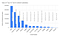

This Top1K search engine
a Tech-enabled idea that serves a Minimum Viable Audience

Google is referencing and indexing billions of websites of any kind and genre and serving millions of results given the keyword we input into its search box. What if a search engine only indexes and references the top 1000 content websites like youtube, medium, TechCrunch, blogger, Wallstreet Journal, and others. Maybe yours is part of these top1000 content websites and will also be part of this search engine that I am describing to you.
Being specific about what it is about can help users and customers filter out what they don't need then if you are searching for something that is deep into the dark web you will for sure not find it into this TK search engine because it is very likely that a website in the top 1000 websites is known by many of us and by the way, is in at the surface of the web.
And why not only these 51websites listed here
here is the chart of their number of pages that could be indexed by this search engine for serving you the best answer about money.
But if you are looking for something in the tech space then TechCrunch and its alternatives can hold the answer to your request. This search engine can just index 10 tech segment content website and the one that I listed are here with the chart of their number of web pages that could be indexed

Or maybe like me Marketing is something you care about because you believe that everything we do on a daily basis involves marketing then this search engines could index this top 10 websites about Marketing and here are their number of pages
If you have read up until there it is then likely that startups speak to you very well and you would like me to know more about them. That’s why including the websites that are about startups news and knowledge into the set of websites to be indexed by this search engine matter and below is the chart that highlights the size of some websites about startups
this search engine will actually index more than 33 million webpages exactly 33,732,888 webpages if it is only focused on the content of these websites about finance, business, Marketing, and startups that I have listed above. Why not such kind of search engine? there are for sure others like me who need it maybe you.
Aren’t you?
PS: this tech-enabled idea implements the lessons of the framework of the minimum viable audience of Seth Godin or if you like the true 1000 fans of Kevin kelly. This framework for shaping a business model is described in this article I have writen.
Please take care about this tech-enabled idea below if you are going to build this search engine